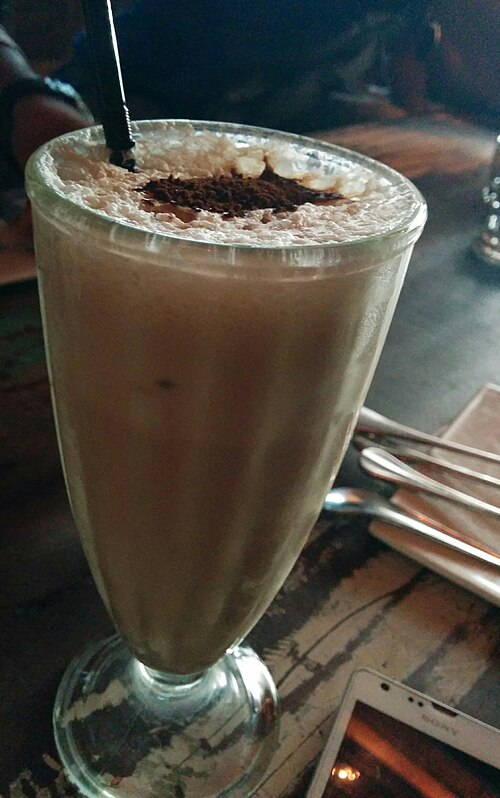

Cold Coffee

Description
In this recipe, coffee brewed slowly in cold water is less acidic than hot-brewed.
You can use this concentrate straight over ice or microwave half a mug of coffee and
then add a half cup of boiling water for quick hot coffee.
Develop your own ratio of coffee to water for your custom brew.
Ingredients
- ½ pound coarsely ground coffee beans
- 4 ½ cups cold water
- cheesecloth
- coffee filters
Instructions
- Put coffee grounds in a large container. Slowly pour water over grounds.
- Cover bowl with plastic wrap and steep at room temperature for 18 to 24 hours.
- Line a strainer with several layers of cheesecloth and place atop a pitcher; strain
coffee through the cheesecloth into the pitcher. Discard the grounds. To get a clearer brew, strain
coffee again through coffee filters. Store in refrigerator.